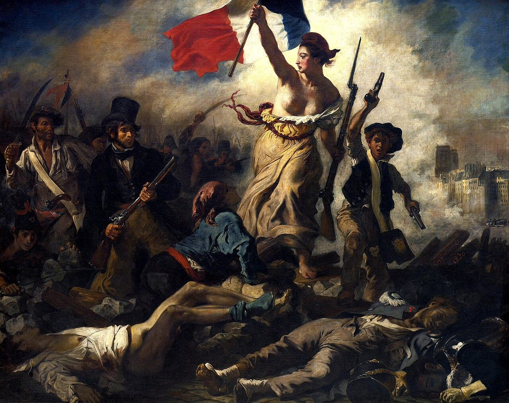

Hidden in the Frame · Louvre Museum, Paris
Liberty Leading the People
Eugène Delacroix · 1830 · Oil on canvas, 260 × 325 cm · Room 700 (Denon wing, level 1)

The story
The painting doesn't show the Revolution of 1789 but the July Revolution of 1830: in three days of street fighting, Parisians overthrew King Charles X. Delacroix didn't fight himself, but painted the picture that same autumn. The state bought it – and soon hid it away again because it was too rebellious. In 2024 it was restored: eight yellowed layers of varnish came off, and suddenly the sky over Paris is blue again.
Details to look for
- Liberty is no goddess on a cloud but a woman of the people: barefoot, wearing a Phrygian cap, the sign of freed slaves, with the tricolour in her hand. She looks back to see whether everyone is following.
- The boy with two pistols runs ahead of her – only the restoration made that clear. He is often called “Gavroche”, after the character in Victor Hugo's “Les Misérables”. But Hugo's novel only appeared in 1862: if anything, the painting probably inspired the novel.
- The man in the top hat with the rifle is a bourgeois, not a worker. For a long time people said Delacroix painted himself here – it can't be proven. What is certain: all classes are fighting together.
- On the right, the towers of Notre-Dame appear in the smoke. Look closely: a tiny tricolour flies on one tower. That's how you know where this is – in the heart of Paris.
What it says
An idea gets a body: freedom as a woman of the people, leading the way – the painting became a symbol of the French Republic.
Open the full guide – zoom, audio guide, German & Japanese →